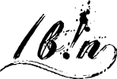
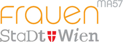

Hallo, Wien!
Rails Girls took place in Vienna on 18 and 19 January 2013!
During this free two-day workshop we dove into the magical world of programming with Ruby on Rails.
You learn designing, prototyping and coding with the help of our coaches.
You need your own laptop, curiosity and a sprinkle of imagination!
Want to help? We are always looking for volunteers and Rails coaches for future events. E-mail us.
Have more? Send us the link!
Programming 101 by Rodrigo Haenggi
| 18.00 - 20.30 |
Installation partyGet to know the other participants a little bit better before the main event starts. Bring your laptop if you can, so we can install Ruby on Rails for you. |
|---|---|
| 21.00 - |
Coaches dinnerAll coaches are welcome to our coaches dinner where we'll go through the programme for the next day. |
| 9:00 - 10:00 |
Registration, coffee and installation festDuring the morning we’ll install Ruby on Rails on your computer (for those who couldn't make the installation party). |
|---|---|
| 10:00 - 10:15 |
Welcoming wordsOutline of the day & word from our sponsors. |
| 10:15 - 10:30 |
Programming IntroDesigning your web app. |
| 10:30 - 11:00 |
Bento Box IntroLearn to "speak geek" and to understand web apps. |
| 11:00 - 12:30 |
Tryruby.orgLet's get coding! |
| 12:30 - 13:30 | Lunch |
| 13:30 - 15:30 |
WORKSHOPJumpstart your first web application. |
| 15:30 - 16:15 |
Lightning talks from our coaches |
| 16:15 - 18:00 |
WORKSHOPExtend your application. |
| 18:00 - |
AfterpartyOpen to everyone. Time to socialise with your fellow participants and the team! |
| To get an even better idea of what happened during the day, have a look at videos taken at the events in Berlin and Zürich! | |
Applications closed: 7 January
Acceptances informed: 10 January
Rails Girls Vienna Jänner 2013 – Oder warum Coding einen zum Chefkoch am eigenen Computer macht
in-ga.me, 06.03.2013
Women and Tech: Rails Girls Vienna
What does cuisine have in common with code?
inventures.eu, 01.02.2013
"Rails Girls Vienna": Anfängerinnen lernen programmieren
derStandard.at/Web, 21.12.2012
Rails Girls animieren Frauen zum Programmieren
futurezone.at, 20.12.2012
Rails Girls Vienna is organised with the support of our wonderful partners!
Want to help? We are looking for partners & sponsors for future non-profit Rails Girls events! E-mail us!
Metalab is an open (hacker)space in Vienna's city centre where people do creative things with and without technology. Metalab helps organise Rails Girls Vienna.
The HUB Vienna is a co-working space in Vienna's 7th district, which offers a creative and intentional atmosphere for meetings, workshops and events of different formats.
photobasis.net is where Vienna-based photographer Raimund Appel makes all his event photography available to the public.
Tupalo.com is a local search community (built on Ruby on Rails) where people discover, rate and review the best local businesses around the corner or around the world.
ZIT is the technology promotion agency of the City of Vienna. We enable ideas, support innovation and plan the infrastructure of tomorrow.
Super-Fi is not only among the biggest digital agencies in Austria, but also a group of companies (including magazines The Gap and Biorama) sporting the same name.
 ambuzzador is a Buzz Marketing Agency in Vienna offering services in Buzz Marketing (WOM), Digital Communication and Social Branding, from strategy to implementation, to national and international brands.
ambuzzador is a Buzz Marketing Agency in Vienna offering services in Buzz Marketing (WOM), Digital Communication and Social Branding, from strategy to implementation, to national and international brands.
 /bin (Basisgruppe Informatik) is a loosely organized, grassroots democratic group that tries to engage in critical and emancipatory politics in an antihierarchical way.
Platogo designs and develops awesome and rock solid social media apps, games, web & mobile apps - usually with Ruby on Rails. - And we are currently hiring!
Wooga creates games that excite around 50 million active players every month, which makes Wooga one of the largest social games developers in the world.
 runtastic, a leader in the mobile app sector, promotes health and fitness in a fun, interactive community via our mobile apps, supporting hardware, and online service.
runtastic, a leader in the mobile app sector, promotes health and fitness in a fun, interactive community via our mobile apps, supporting hardware, and online service.
 MA57, Vienna's Women’s Department, is responsible for the promotion and coordination of women’s issues and advocates a gender-equitable society which offers women and men equal living and working opportunities.
How much does the workshop cost? Nothing, it's free! You just need to be excited!
Who is this aimed at? Women of all ages with basic knowledge of working with a computer. More skills are also fine but not a prerequisite. The introduction and lightning talks will be held in English, all work in small groups will be done in German or English. Please bring your own laptop.
Can men attend? Yes, but men need to be accompanied by an interested lady. Also, women are given a priority.
I know how to program - How can I help? We're also looking for people to coach our attendants. We'll have a two to three hour workshop before the event to walk you through the curriculum. E-mail us.